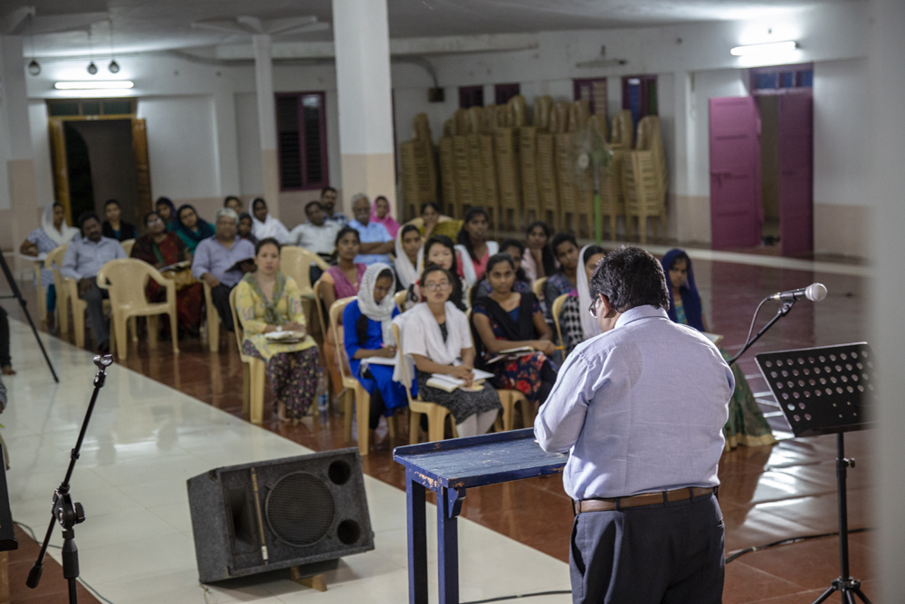

Worship is central to life at COTR. In and through worship, we individually and corporately encounter, experience, and celebrate the God to whom the rest of our intellectual, contextual, spiritual, communal, and ministerial activity is directed.
In worship God gathers us to God’s own self, especially through the celebration and remembrance of baptism. God founds our lives and our community on God’s Word, which reveals our need of God’s grace and freely offers that grace. God nourishes us in the meal, where we experience now the fulfillment of God’s reign, to which God continues to draw us and all that is. Finally, God sends us to live as Christ’s body in the world. Through worship, the church witnesses to and is drawn into God’s own purpose of reconciling the world to God’s own self. Worship is the way God gathers people to witness to and participate in God’s work of reconciliation.
In its Mission Statement on Worship, COTR claims its identity as the Church of Jesus Christ, sustained by the Word and sacraments of the Church in the power of the Spirit. COTR’s worship seeks to be , contextual, inclusive and confessionally pentecostal. Planned by the community itself, it incorporates the diversity of gifts and people in the seminary community.
The seminary community worships Monday through Thursday at 11 a.m. The normal rhythm of worship is a Service of the Word with faculty and a more innovative worship service with student preaching on Thursday. In consultation with the dean of the chapel and the Standing Committee on Worship, students have provided additional worship opportunities, such as morning and evening prayer at chapel.
Each week a different group of students, faculty and staff plan and lead worship.
